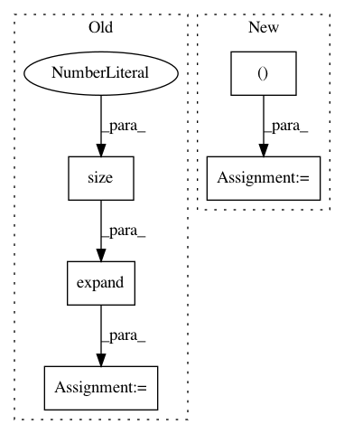

5e148038be5971f2c7c811d46a1d7b28c759ecda,layers/common_layers.py,GravesAttention,forward,#GravesAttention#Any#Any#Any#Any#,144
Before Change
g_t = torch.softmax(g_t, dim=-1) / sig_t + self.eps
// each B x K x T_in
g_t = g_t.unsqueeze(2).expand(g_t.size(0),
g_t.size(1),
inputs.size(1))
sig_t = sig_t.unsqueeze(2).expand_as(g_t)
mu_t_ = mu_t.unsqueeze(2).expand_as(g_t)
j = self.J[:g_t.size(0), :, :inputs.size(1)]
// attention weights
phi_t = g_t * torch.exp(-0.5 * (mu_t_ - j)**2 / (sig_t**2))
After Change
// discritize attention weights
alpha_t = self.COEF * torch.sum(phi_t, 1)
alpha_t = alpha_t[:, 1:] - alpha_t[:, :-1]
// apply masking
if mask is not None:
alpha_t.data.masked_fill_(~mask, self._mask_value)
In pattern: SUPERPATTERN
Frequency: 3
Non-data size: 5
Instances
Project Name: mozilla/TTS
Commit Name: 5e148038be5971f2c7c811d46a1d7b28c759ecda
Time: 2020-01-09
Author: root@sp-mlc3-5423-0.mlc
File Name: layers/common_layers.py
Class Name: GravesAttention
Method Name: forward
Project Name: open-mmlab/mmdetection
Commit Name: a6236b789b8f4e2e66c8379199f40ecef9afce06
Time: 2020-04-21
Author: 40779233+ZwwWayne@users.noreply.github.com
File Name: mmdet/core/anchor/anchor_generator.py
Class Name: AnchorGenerator
Method Name: valid_flags
Project Name: rusty1s/pytorch_geometric
Commit Name: 01b293b84fd2b1eeb80a01afe44d341d9c9c6486
Time: 2018-04-29
Author: matthias.fey@tu-dortmund.de
File Name: torch_geometric/transform/cartesian_local.py
Class Name: CartesianLocalAdj
Method Name: __call__